Understanding Priors and Hyperparameters in diseasenowcasting
diseasenowcasting team
Source:vignettes/Understanding_Priors.Rmd
Understanding_Priors.RmdA prior is a probability distribution that encodes the beliefs about a parameter before seeing the data. When data is informative (i.e. many cases, long reporting history), the prior has little impact and the data overwhelms it. When the data is sparse or noisy (early epidemic, small populations), the prior substantially shapes the estimates.
Quick reference
Here we show what to change depending on your situation. Examples are below.
| Priority | Setting(s) | What it Controls | When to Adjust |
|---|---|---|---|
| 1 |
phi in nb_likelihood() (or change to
poisson_likelihood()) |
Interval width (i.e. coverage) | Start here if coverage is off. |
| 2 |
Delay’s
parameters mu, sigma and (if applicable)
Q
|
How much the most-recent past is inflated. | Change here if nowcasting for previous dates (backcasting) has too wide or too short intervals. |
| 3.a |
ell (HSGP), sigma (AR1) |
Trend flexibility near turning points | Adjust when the trend is too rigid or too reactive around inflection points. |
| 3.b |
R0, gamma, N_eff (SIR) |
Mechanistic epidemic shape | Keep these loose unless you have epidemiological knowledge. |
| 4 |
N_pop (SIR only) |
Population at risk | Changing the definition of the population at risk might change the behavior (e.g. for STIs maybe the population at risk is technically the whole population but using a subset, such as the sexually-active individuals might yield better results). |
| 5 |
num_basis (HSGP) |
Trend smoothness/complexity (this is not technically a prior). | Increase if the trend looks too smooth; decrease if it looks too noisy. |
| 6 | covariate_prior |
Strength of covariate effects | Mainly matters when additional covariates are included and have strong effects. |
What the rest of the vignette shows:
This vignette teaches the impact of the main priors and hyperparameters of our models. It uses a tight prior distribution vs a loose diffuse one and shows how their usage results in different values.
Each figure shows the same three panels, because a parameter can move one (or more!) of three different things:
| Reporting delay | Smoothed epidemic | Nowcast |
|---|---|---|
| Fitted delay distribution | Modelled epidemic process (unobserved) | Predicted nowcast |
In the nowcast panel, solid grey points are the counts reported so far and hollow points are the eventually-observed truth.
For this simulation we use the denguedat
dataset (weekly dengue cases from Puerto Rico). However the qualitative
impact of the priors can be translated to any other disease.
1. Likelihood prior: NB precision (phi)
The negative-binomial precision phi controls how much
count variability is not explained by the trend. It is the
single biggest driver of interval width. Small
precision phi results in a very overdispersed process (wide
intervals); a large phi is very precise (tight
intervals).
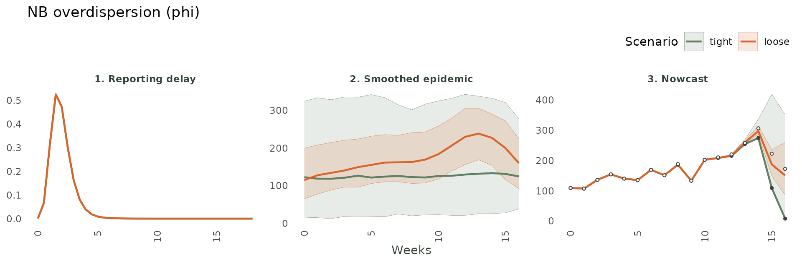
What to watch:
phi’s main job is the width of the epidemic process (both nowcast and smoothed epidemic); it barely moves the delay (panel 1). If your 90% intervals routinely miss the truth, use a smallerphi(more overdispersion); if they are too wide, use a larger one.
2. Reporting-delay parameters
Delay parameters act first on panel 1 (the fitted delay distribution) and then propagate to the nowcast (panel 3), which inflates the most-recent counts. Intuitively, if a delay has a heavier tail, the nowcast will have a wider interval in the past as cases have more time to arrive.
2.1 Log-Normal delay
2.1.1 Location (mu)
mu is the (log) typical delay in the delay units
(i.e. if a delay usually takes 2 weeks then \mu \approx log(14) if the units are days and
\mu \approx log(2) if units are weeks).
A small mu implies reports arrive fast; a large one, a long
delay (on average).
What to watch: panel 1 slides left/right with
mu. If the fitted delay is too short the nowcast under-inflates recent weeks (panel 3 sits too low); too long and it over-inflates.
2.1.2 Scale (sigma)
sigma (> 0) is the spread of the log-normal
(i.e. how concentrated the delays are). A small sigma implies a
sharp spike at the typical delay; a large value, a heavy tail
(_i.e. more extreme values).
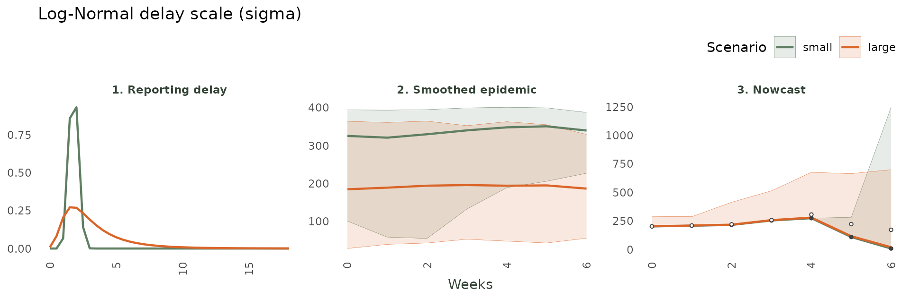
What to watch:
sigmachanges the shape of panel 1 without moving its centre. A heavier tail means more cases are still expected to arrive, so the nowcast propagates its uncertainty throughout the recent past. A shorter tail (smallersigma) implies all the uncertainty concentrates very close to thenowof thenowcast.
2.2 Generalized-Gamma delay
2.2.1 Location (mu)
mu behaves similar to the Log-Normal location.
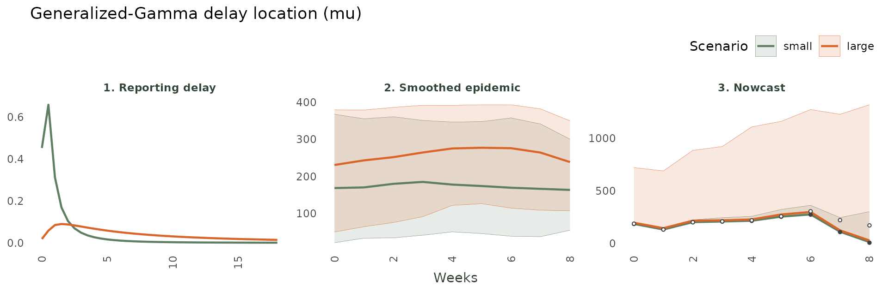
What to watch: as for the Log-Normal,
muslides the whole delay distribution (panel 1) to shorter or longer delays.
2.3 Dirichlet (non-parametric) delay
2.3.1 Concentration (alpha)
The Dirichlet delay learns a free histogram. A small value (< 1) lets it spike on only a few delays; a large one pushes it towards assigning positive probability to more values.
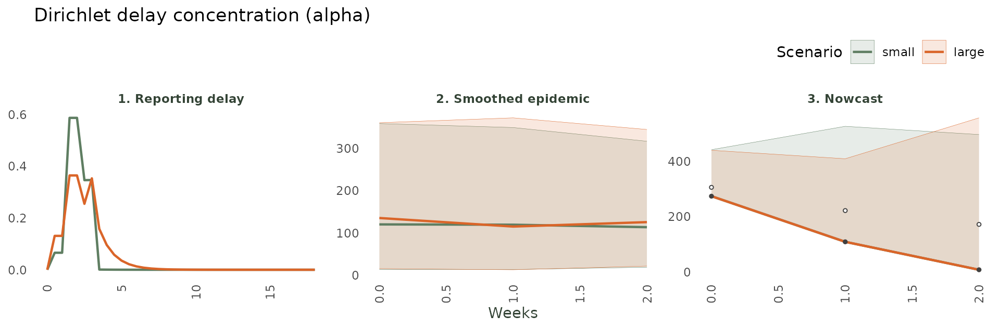
What to watch: panel 1 shows the effect. A small
alphalets the delay spike on a handful of observed delays; a largealphalets more delays be possible. A large value will always be more susceptible to noise.
3. Epidemic-process parameters
The epidemic process is the smooth latent trend the nowcast extrapolates. The package offers three: the flexible HSGP, the simpler AR(1), and the mechanistic SIR.
3.1 HSGP
3.1.1 Amplitude (alpha)
alpha as the Gaussian Process amplitude dictates how far
the latent trend may swing. Small values imply a flatter trend; larger
lets it squiggle more.
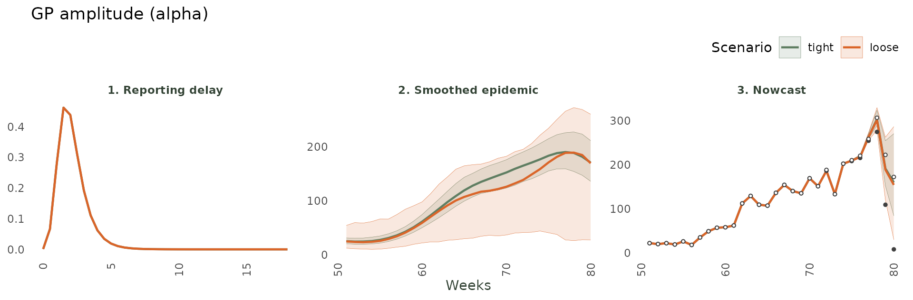
What to watch: the amplitude controls the height of the latent trend (panel 2) and therefore the width of the nowcast (panel 3); the delay (panel 1) is untouched.
3.1.2 Length-scale (ell)
ell is the GP length-scale (i.e. the horizontal
“wavelength” of the trend). Small values imply a wiggly and quick to
bend epidemic process; large ones long and smooth catching less
variation.
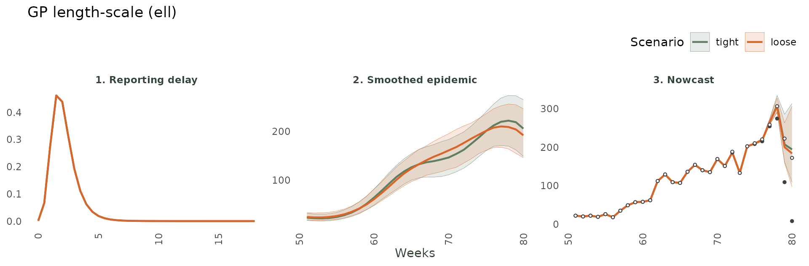
What to watch: a short value lets the trend bend sharply through the peak (panel 2) at the cost of wiggle; a long one forces a smoother curve that can lag turning points.
3.1.4 HSGP: number of basis functions (num_basis)
num_basis is the resolution of the GP.
It is a hyperparameter (a number). The default is automatic set by
(~1.5\sqrt{T}) with T being the maximum time planned to be
observed.
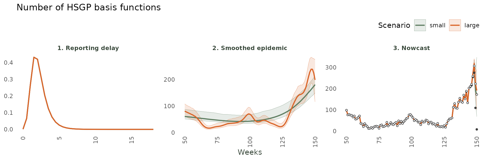
What to watch: few basis functions force an over-smooth trend that can lag the peak (panel 2); many let the model track rapid change but risk over-fitting noise near the end. The delay (panel 1) is unaffected.
3.2 AR(1)
3.2.1 Autocorrelation (phi)
phi represents the persistence of the autoregressive
trend. Near 0 it forgets the past immediately and goes back to the (log)
mean of the epidemic; near 1 it completely depends on the previous
value.
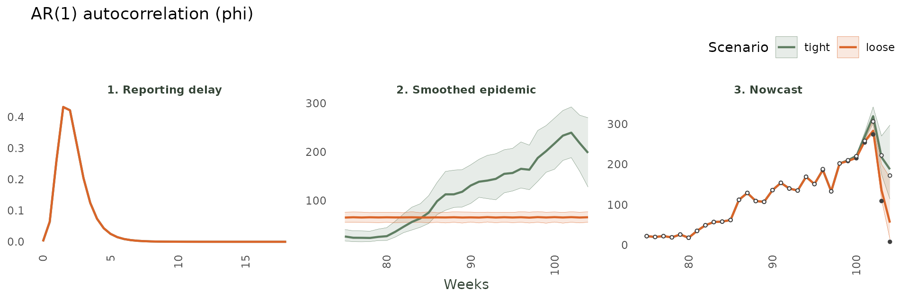
What to watch: A loose
phimakes recent moves persist into the nowcast (panel 2-3); a tightphireverts to the mean quickly.
3.2.2 Innovation SD (sigma)
sigma (> 0) is the size of the random step the trend
takes each week. A small value results in a smooth process while a large
value is jumpy.
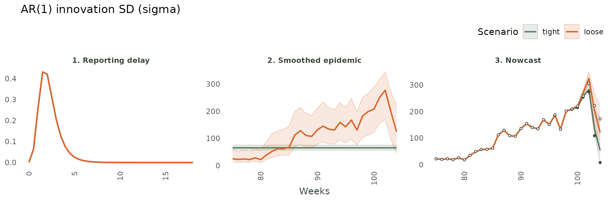
What to watch: A small
sigmakeeps the trend smooth with narrow intervals; a largesigmalets it wiggle, widening the nowcast.
3.3 SIR
3.3.1 Basic reproduction number (R0)
R0 (> 0) sets how fast a mechanistic SIR epidemic
grows. Below 1 it extinguisges; large values grow extremely fast.
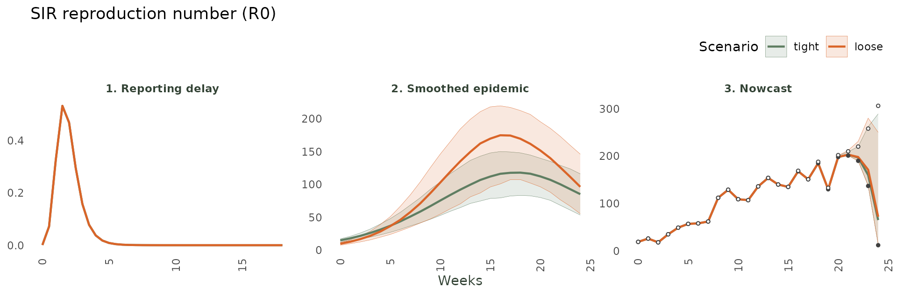
What to watch:
R0acts through the shape of the epidemic curve (panel 2) representing how steeply it climbs as well as the final size of the epidemic.
3.3.2 Recovery rate (gamma)
gamma in (0, 1) is the rate people leave the infectious
pool (1/gamma represents the mean infectious period). A
tight small value implies a slow recovery, hence a long epidemic as
individuals have more chance to transmit. A large loose value allows
individuals to recover very fast and hence reduce the final-size of the
epidemic.
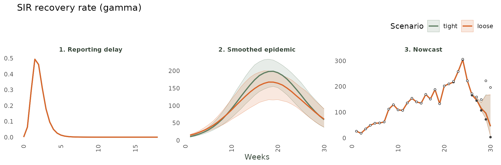
What to watch:
gammasets the epidemic’s duration and the speed of its decline (panel 2), so it is shown a few weeks past the peak.
3.3.3 Susceptible fraction (N_eff)
N_eff in (0, 1) is the fraction of the population that
is actually at risk. A small value is a tiny pool. The epidemic
saturates fast and at a lower peak. A large value implies a longer
epidemic with more individuals getting infected.
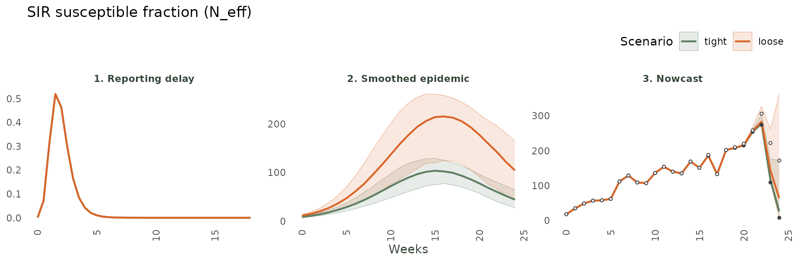
What to watch:
N_effsets the size of the susceptible pool and hence the peak’s height (panel 2).
4. Covariate priors (covariate_prior)
When temporal effects (seasonality, day-of-week) are attached to a
nowcast() call, each effect column becomes a covariate.
model(covariate_prior = ...) sets a shared prior on every
covariate coefficient. The fits below use weekly dengue data with
52-period seasonality attached.
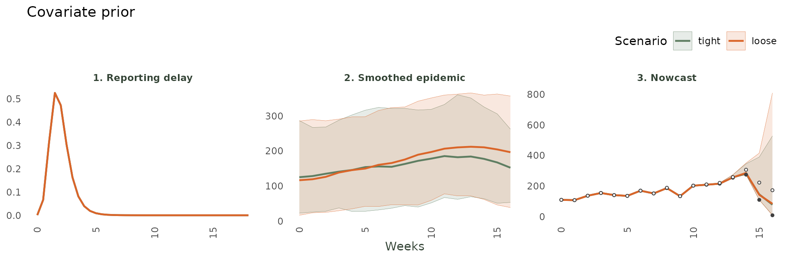
What to watch: a tight prior (near-zero coefficients) forces the epidemic process to explain all variation alone. A loose prior lets the
covariates pull the curve up or down strongly.
5. Practical guide
To set any parameter in a model() you can do either of
two things:
Pass a number to fix it (constant prior), or
Pass a
*_prior()object to give it a prior.
# Fix values you know (numbers):
mdl <- model(nb_likelihood(), hsgp_epidemic(num_basis = 5),
lognormal_delay(mu = log(2)))
# Or give priors (tight = confident, loose = diffuse):
mdl <- model(nb_likelihood(phi = lognormal_prior(log(5), 0.5)),
hsgp_epidemic(alpha = half_normal_prior(0, 5)),
lognormal_delay(mu = normal_prior(log(7), 0.1)))
# Inspect what the defaults resolve to:
default_priors(model(nb_likelihood(), hsgp_epidemic(), lognormal_delay()))See also the summary at the beginning of this vignette for specific steps.